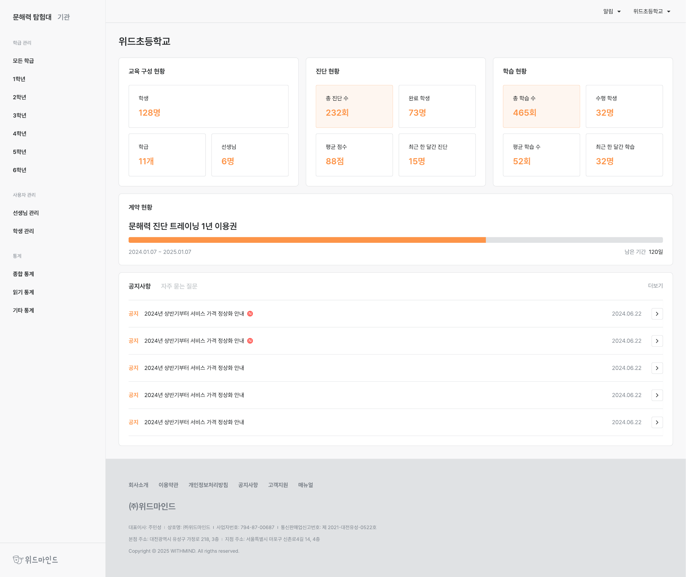
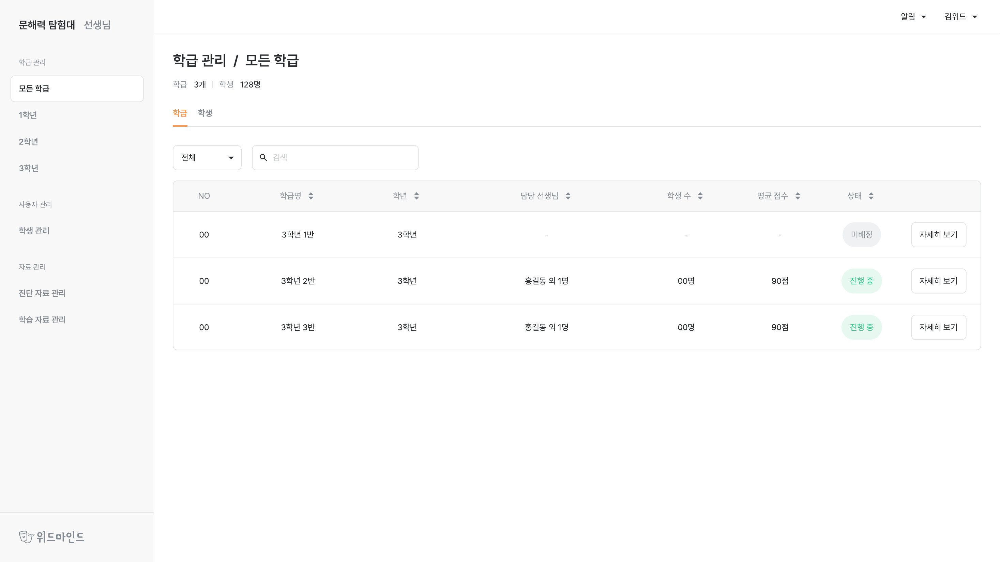
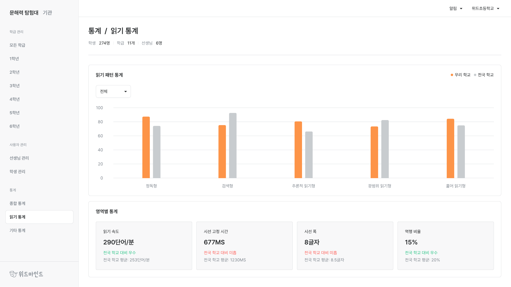
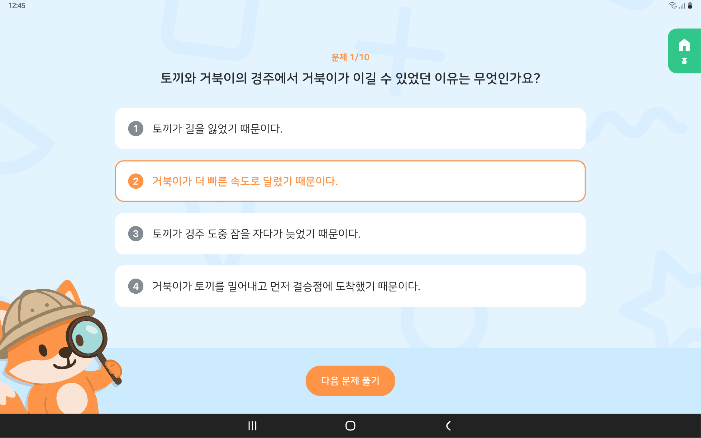

선생님 문해력 탐험대
학생의 문해력을 AI로 진단하고 맞춤 학습으로 이어주는 교육 서비스입니다. 그중 선생님과 기관이 쓰는 관리자 사이트를 맡았습니다.

프로젝트 개요
문해력 탐험대는 학생의 문해력을 AI로 진단하고, 그 결과에 맞춘 학습까지 이어주는 교육 서비스입니다.
읽기 능력은 모든 학습의 출발점이지만 교실에서는 학생 개개인의 읽기 습관과 문해 수준을 파악하기 어렵습니다. 그래서 교과서 기반 지문과 시선 추적으로 읽는 방식까지 측정하고, 어휘력·사실적 이해·추론적 이해·비판적 이해·감상적 이해 다섯 유형으로 나눠 진단합니다. 진단에서 드러난 약점은 맞춤 문제로 이어지고, 학습이 끝나면 다시 진단으로 돌아옵니다.
이 서비스에는 학생이 쓰는 화면과, 선생님·기관이 쓰는 관리자 화면이 따로 있습니다. 저는 그중 선생님·기관 관리자 사이트를 맡았습니다. 진단이 아무리 정확해도 교사가 결과를 읽고 다음 수업에 쓰지 못하면 서비스가 닫히지 않기 때문에, 데이터를 어떤 단위로 묶어 보여줄지가 이 화면의 전부였습니다.
권한이 둘로 갈리는 화면
같은 관리자 사이트를 기관 관리자와 선생님이 함께 씁니다. 기관 관리자는 기관 전체를 운영하고, 선생님은 본인 그룹만 봅니다. 메뉴가 아예 없는 경우와 범위만 좁아지는 경우가 섞여 있어서, 이걸 어떻게 보여줄지가 첫 문제였습니다.
| 기능 | 기관 관리자 | 선생님 |
|---|---|---|
| 그룹 · 선생 관리 | 전체 그룹 · 학생 · 선생님 | 본인 그룹 · 학생만 |
| 진단 · 학습 자료 관리 | 진단 자료 및 학습 자료 설정 | 본인 그룹 자료만 |
| 결과 열람 리포트 | 모든 그룹 | 본인 그룹만 |
| 통계 | 전체 기관 통계 | 없음 |
| 계정 · 이용권 관리 | 기관 단위 관리 | 없음 |
쓸 수 없는 기능을 회색으로 남겨 두면 그것부터 눈에 걸립니다. 선생님 계정에서는 통계와 계정 관리를 메뉴에서 아예 빼고, 범위만 좁아지는 화면은 같은 컴포넌트를 쓰되 조회 범위를 화면 위에 적어 두는 쪽으로 나눴습니다.

등록과 배정
학기 초에는 학생과 선생님 계정을 한꺼번에 만들어야 합니다. 한 명씩 넣는 방식만 있으면 학급 단위 작업에서 막히기 때문에, 개별 등록과 엑셀 양식 일괄 등록을 함께 뒀습니다.
일괄 등록은 실패하는 행이 반드시 생깁니다. 어느 행이 왜 안 됐는지 파일을 다시 열어 대조하지 않아도 되도록, 결과를 행 단위로 되돌려 주고 고칠 곳을 화면에서 바로 짚도록 만들었습니다. 등록한 계정은 그룹과 학급에 배정하고, 정보 수정과 계정 정지까지 같은 화면에서 처리합니다.
진단 리포트
리포트는 그룹 · 학생 · 개별 진단 세 단위로 나뉩니다. 선생님이 실제로 보는 순서가 그렇기 때문입니다. 먼저 우리 반이 전체에서 어디쯤인지 보고, 눈에 걸리는 학생을 찾고, 그 학생이 어느 문항에서 틀렸는지까지 내려갑니다.
그래서 세 화면을 따로 만들지 않고 같은 흐름으로 이어지게 했습니다. 한 단계 내려갈 때마다 앞 단계에서 보던 기준이 그대로 따라오도록 맞췄습니다. 문항 유형별 정답률과 다섯 유형별 성취 수준은 표와 그래프를 같이 두어, 수치를 읽지 않아도 형태로 먼저 눈에 들어오게 했습니다.
통계와 자료 관리
기관 관리자는 학교·학년·학급 단위로 데이터를 열람합니다. 학년별 평균과 성장 추이를 비교하는 화면이라 기간과 단위를 바꿔 가며 보게 되는데, 조건을 바꿀 때마다 무엇을 보고 있는지 놓치기 쉬워 적용된 기준을 화면 위에 남겨 뒀습니다.
자료 관리에서는 선생님이 담당 그룹의 진단 자료와 학습 자료를 직접 다룹니다. 원하는 지문을 올려 문제를 만드는 흐름도 여기에 붙습니다.

학생 서비스 고도화
관리자 사이트와 함께, 이미 운영 중이던 학생용 화면도 일부 맡아 고쳤습니다.
어떤 화면을 무엇 때문에 어떻게 고쳤는지
고치고 나서 달라진 점

기술 스택
관리자 사이트 전반의 화면을 구현했습니다. 등록·수정·삭제·업로드처럼 결과가 갈리는 작업이 많아, 정상·오류·확인 상태를 화면에 어떻게 남길지 정하는 일이 작업의 큰 부분이었습니다.
정리
진단 결과가 정확한 것과 교사가 그 결과를 쓸 수 있는 것은 다른 문제입니다. 이 프로젝트에서 한 일은 대부분 데이터를 어떤 단위로 묶고 어떤 순서로 내려가게 할지 정하는 쪽이었습니다.